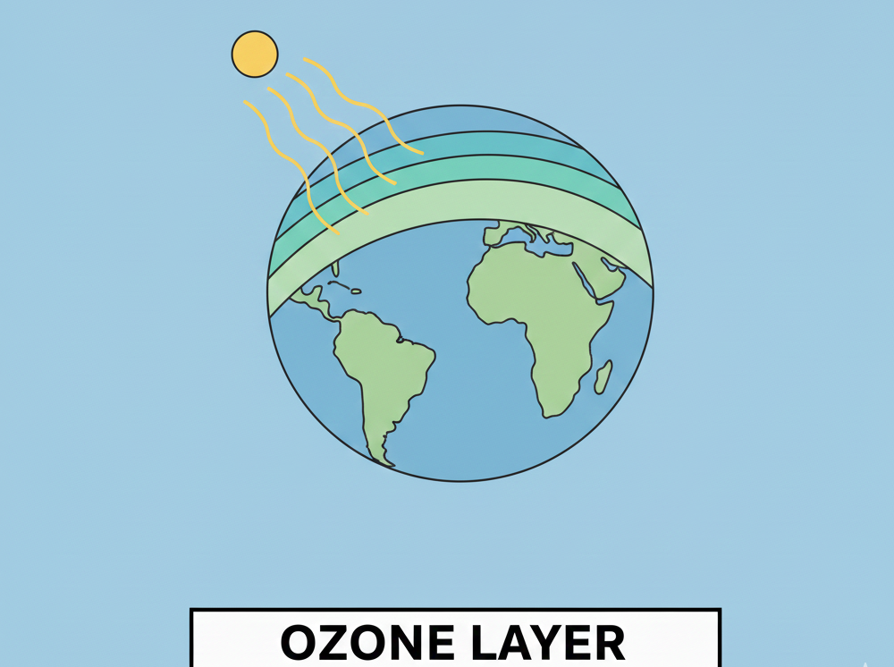

OZONE LAYER
Meaning of Ozone Layer
The ozone layer is a layer in the Earth’s atmosphere that contains a high concentration of ozone (O₃) gas. It is located in the stratosphere, about 15 to 35 kilometers above the Earth’s surface. The ozone layer protects living things on Earth by absorbing the majority of the Sun’s harmful ultraviolet (UV) radiation.

Structure of the Atmosphere and Location of Ozone Layer
The Earth’s atmosphere is divided into layers:
- Troposphere – the layer closest to the Earth where weather occurs.
- Stratosphere – the second layer where the ozone layer is found.
- Mesosphere – above the stratosphere.
- Thermosphere – above the mesosphere.
- Exosphere – the outermost layer.
The ozone layer is concentrated in the stratosphere, mainly between 20 km and 30 km above the Earth’s surface.
Importance of the Ozone Layer
The ozone layer is important because it helps us to:
- Protect living things from UV radiation – UV radiation can cause skin cancer, cataracts, and damage to plants and marine life.
- Maintain ecological balance – It helps to regulate the amount of UV radiation reaching the Earth, protecting ecosystems.
- Prevent excessive heating of the Earth – By absorbing UV rays, it helps control the Earth’s temperature.
Ozone Layer Depletion
Meaning
Ozone layer depletion refers to the gradual thinning and reduction of ozone gas in the stratosphere. This leads to increased exposure of the Earth’s surface to harmful ultraviolet radiation.
Causes of Ozone Layer Depletion
- Chlorofluorocarbons (CFCs) – chemicals used in air conditioners, refrigerators, and aerosol sprays.
- Halons – chemicals used in fire extinguishers.
- Carbon tetrachloride – used in some industrial processes.
- Hydrochlorofluorocarbons (HCFCs) – used as substitutes for CFCs but still harmful.
- Air pollution – emission of nitrogen oxides and other chemicals.
Effects of Ozone Layer Depletion
- Increased skin cancer – due to higher levels of UV radiation.
- Eye damage – cataracts and other eye problems.
- Weakened immune system – increased susceptibility to diseases.
- Damage to plants – reduced crop yields and forest growth.
- Harm to marine life – planktons and fish are affected by UV radiation.
- Global warming – ozone depletion contributes indirectly to climate change.
Ways to Protect the Ozone Layer
- Avoid using CFCs – use ozone-friendly products and refrigerants.
- Reduce air pollution – minimize the release of harmful chemicals into the atmosphere.
- Proper disposal of old refrigerators and air conditioners – prevent release of harmful gases.
- Planting trees – trees absorb carbon dioxide and reduce pollution.
- Following international agreements – such as the Montreal Protocol, which bans the production of ozone-depleting substances.
Summary
The ozone layer is a protective layer in the stratosphere that shields the Earth from harmful ultraviolet radiation. Its depletion, mainly caused by human activities such as the use of CFCs, can lead to serious health and environmental problems. Protecting the ozone layer is essential for human health, agriculture, and the ecosystem.